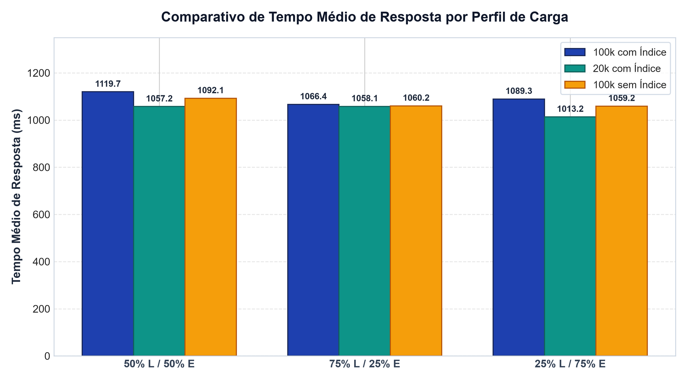

- Taxa de Erros: O cenário B (75% Leitura) teve mais erros porque cada leitura serializa e retorna 100 registros em JSON, enquanto o cenário C (75% Escrita) insere apenas 1 linha por vez.
- Tempo Médio: Permaneceu próximo de 1,01 s a 1,12 s em todas as execuções.